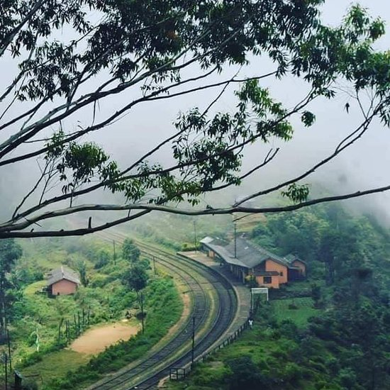
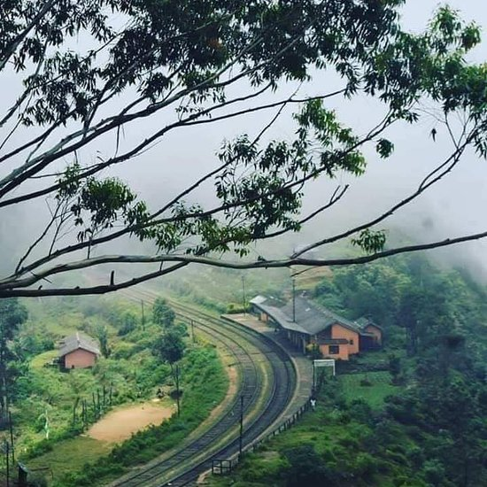
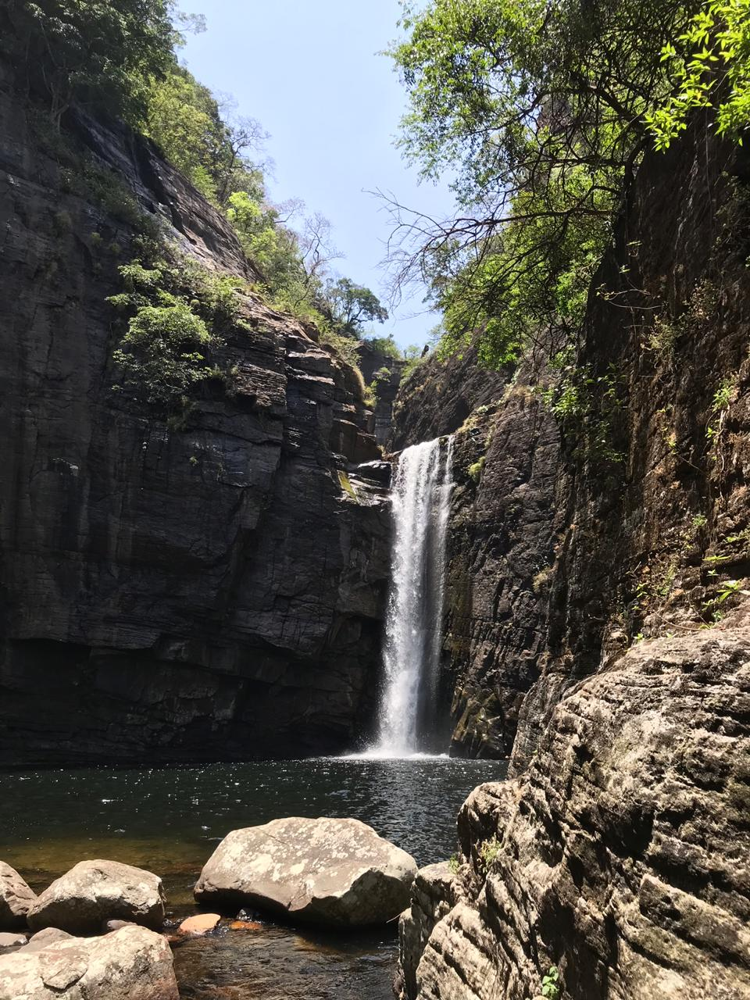
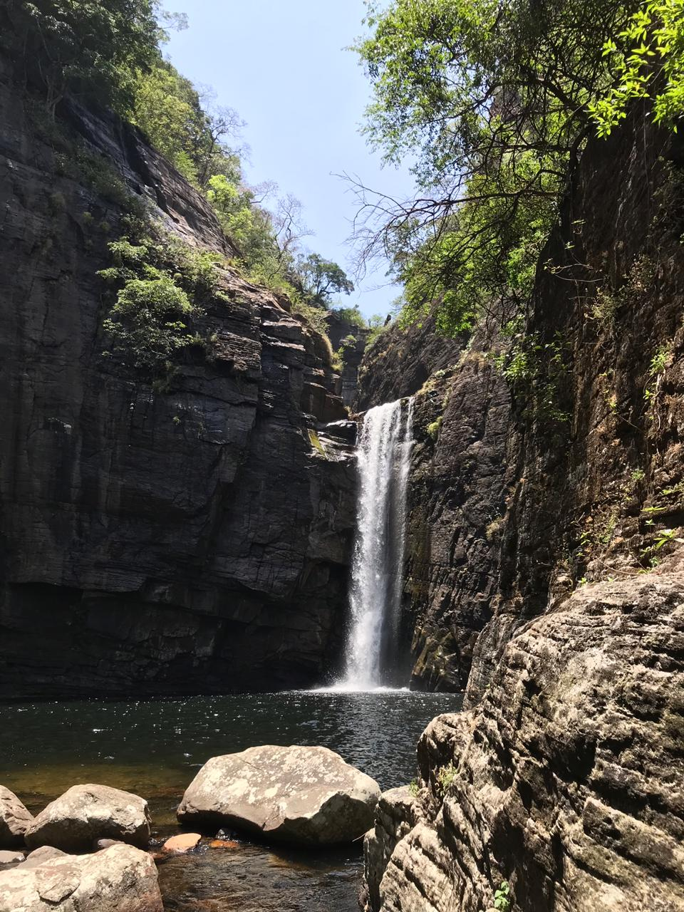
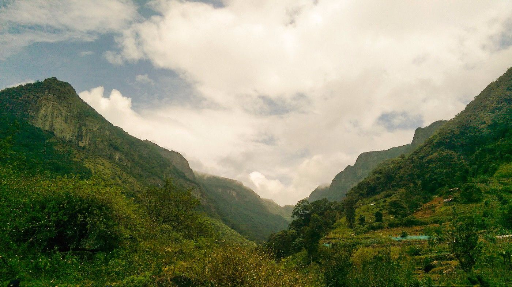
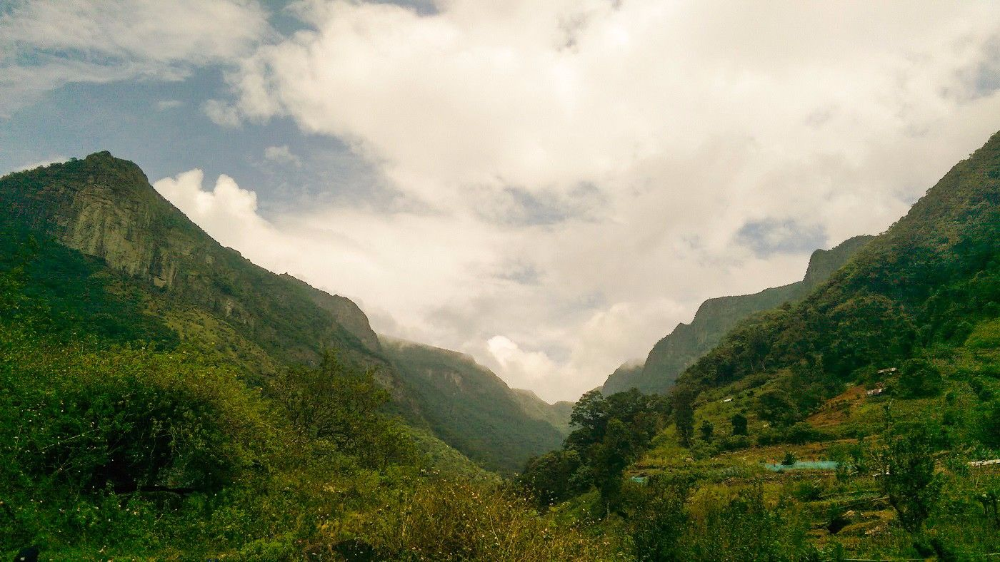

1. Hanthana Hike
Hanthana is a splendid mountain range situated in the Kandy district, renowned for its suitability for hiking, camping, and birdwatching. The summit offers breathtaking panoramas of the Kandy city, the Knuckles mountain range, the Dolosbage range of Aranayake, and the hills of the Sabaragamuwa region. The ascent to the peak typically requires more than 5 hours to complete.


2. Adam's Peak
Adam's Peak, also known as Sri Pada and Samanala Kanda in the local language, is a revered mountain in the central province of Sri Lanka, with an elevation of 2243 meters (7359 feet). At its summit lies a footprint that holds religious significance for multiple faiths. Buddhists regard it as the footprint of Lord Buddha, while Hindus associate it with Hanuman or Shiva, and Islamic and Christian traditions link it to Adam or St. Thomas. This site is revered by adherents of all religions in Sri Lanka.
Access to the mountain is facilitated by six trails: Ratnapura-Palabaddala, Hatton-Nallathanni, Kuruwita-Erathna, Murraywatte, Mookuwatte, and Malimboda. The mountain straddles the border of the Ratnapura and Nuwara Eliya districts. The period from December to March is particularly popular for ascending Adam's Peak.

 

3. Ohiya to Idalgashinna Railway Hike
Idalgashinna and Ohiya are two significant railway stations located along the Badulla railway line, offering a picturesque view as the land steeply descends on both sides. The total length of the hike is 8 kilometers, and it involves crossing 14 tunnels. On average, completing this hike takes approximately 4 hours. It's important to be cautious of the presence of bats inside the tunnels.
 

4. Knuckles Hike
The Knuckles mountain range is located in the Kandy and Matale districts and is traditionally named Dumbara Kanduvetiya. It features nine peaks over 1200m (4000ft). Popular walking routes in Knuckles include Nitro Caves, Mini World's End, Dothalugala Nature Trail, and Duwili Ella Trail. The ideal time for this hike is February/March and August/September. Both one-day and two-day hikes are available.
5. Riverstone hike
Riverstone is a forest located in the Matale district, approximately 30km from Matale town. The area features two beautiful waterfalls, "Sera Ella" and "Bambarakiri Ella," which contribute to the Thelgamu Oya. The climate is akin to that of the Horton Plains, and a two-kilometer hike leads to the mountaintop, offering a stunning 360-degree view on a clear day.
 


6. Mandaram Nuwara hike
Mandaram Nuwara is a unique village located at the base of Piduruthalagala (Mount Pedro). The majority of the village is often enveloped in mist due to its proximity to the adjoining mountain range. The village is home to five main waterfalls, namely Elamulla Ella, Kabara-gala Ella, Digala Hinna Ella, Kalu Palam Ella, and Kolapathana Ella. This village is an ideal destination for a day trip due to its compact size and accessibility.


7. Horton National Park
The Horton Plains National Park is located in the Nuwara Eliya district, at an elevation of 2100-2300 meters (6900-7500 feet). This area boasts a rich biodiversity unique to Sri Lanka. One of its major attractions is Baker's Fall, a prominent waterfall. Another notable feature is World's End, a breathtaking viewpoint that, on a clear day, offers vistas extending to the south coast of Sri Lanka. The park is home to a diverse range of wildlife, including various species of birds, butterflies, Sambar deer, wild boar, wild hare, leopards, and giant squirrels. A hike through the park and plains typically takes approximately 3 hours to complete.

8. Ella Rock Hike
Ella is a city located in the Badulla district, and the optimal months for exploring Ella are March through June. Typically, the hike commences from Ella town, leading through picturesque countryside, verdant tea plantations, and quaint railway lines until reaching the summit of the rock. The hike generally spans a duration of 4 hours to complete.
9. Thotupala Kanda Hike
Hanthana is a splendid mountain range situated in the Kandy district, renowned for its suitability for hiking, camping, and birdwatching. The summit offers breathtaking panoramas of the Kandy city, the Knuckles mountain range, the Dolosbage range of Aranayake, and the hills of the Sabaragamuwa region. The ascent to the peak typically requires more than 5 hours to complete.
10. Kiribathgala Mountain Hike
Kiribathgala mountain is located in the Ratnapura district and is best climbed during the month of February. However, it is also possible to climb the mountain during other months without any issues. The hike entails traversing through a dry forest patch.
11. Uthuwankanda Hike
Uthuwankanda is a stunning mountain located in the Kegalle district. This mountain holds historical significance as it is associated with the Sri Lankan ancient hero, Saradiel, often regarded as a Sri Lankan counterpart to Robin Hood. Saradiel was known for his philanthropic acts of taking money from the wealthy and redistributing it among the less fortunate. Uthuwankanda served as his refuge and hideout. The ascent of this mountain is considered challenging, typically requiring 3-4 hours to complete. Upon reaching the summit, hikers can enjoy a picturesque view of the Kegalle district
12. Devil's Stairs Hike
Devil's Stairs is a renowned hiking trail located in the Central Highlands of Sri Lanka. The 13-kilometer route encompasses a particularly challenging 8.5-kilometer section, making it advisable for hikers to enlist the assistance of a knowledgeable guide. Upon reaching the apex, hikers are rewarded with a stunning panoramic view of the surrounding landscape.